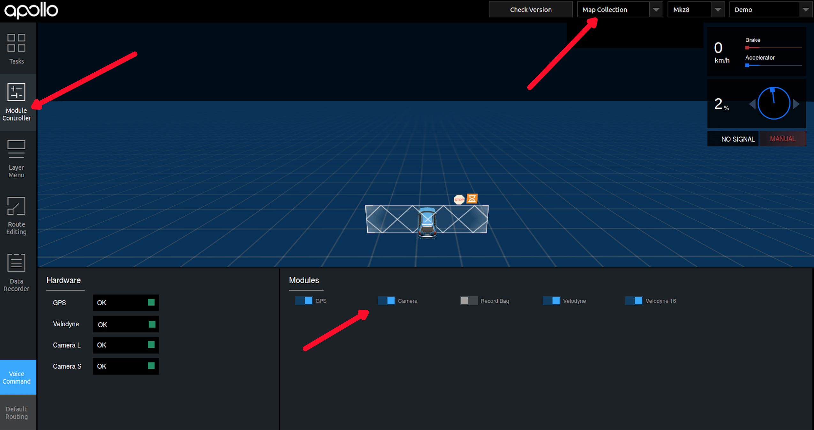
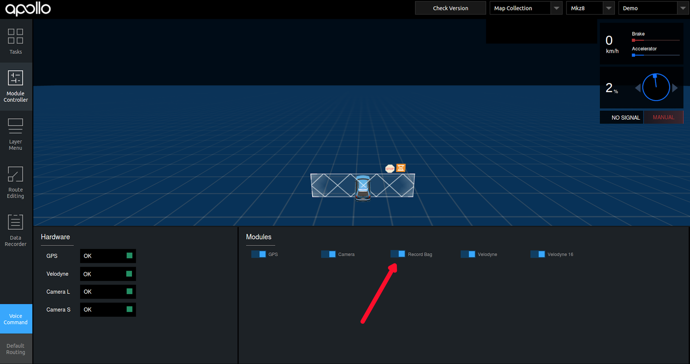
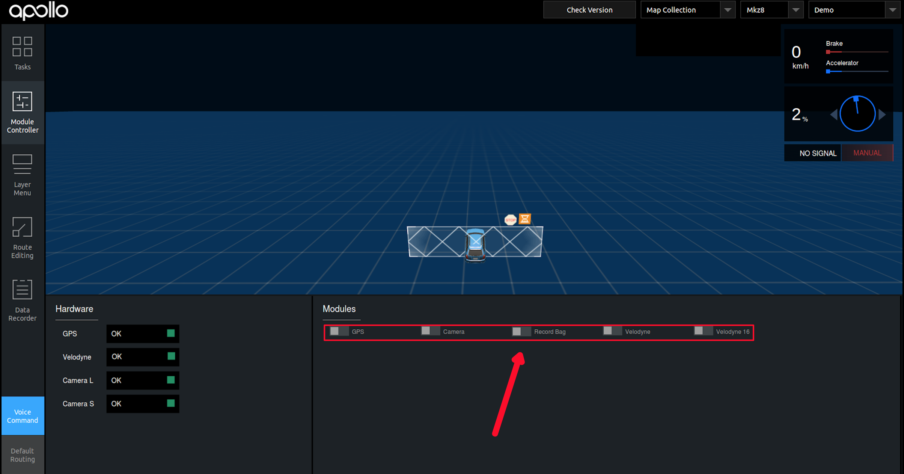

Apollo 2.5 map collection guide¶
This guide is mainly used to explain how to use map collection in Apollo 2.5.
Hardware and Software Requirement¶
Please refer to Apollo 2.5 Hardware and System Installation Guide for the steps to install the hardware components.
Please refer to Apollo Software Installation Guide for steps to install system software.
Please refer to Apollo Sensor Calibration Guide for Sensor Calibration.
NVMe SSD. In order to avoid the possible data loss caused by IO bottleneck, it is recommended to install NVME SSD hard disk in IPC.
Satelliate Base Station. In order to get accurate mapping results, satellite base stations need to be set up to ensure the RTK can work properly.
Data Collection Steps¶
1.Enter Into Map Collection Mode. Please refer to Apollo 2.5 Quick Start for launching the Apollo 2.5 software and hardware stack on vehicle.
Choose [Module Controller] tab, select [Map Collection] mode, and switch on [GPS]、[Camera]、[Velodyne]、[Velodyne16].

confirm whether the sensors are ready.

After sensors are all ready, switch on [Record Bag] to start recording the map data.

Before the map collection, the vehicle needs to be stationary for five minutes, and then circles the ribbon in figure eight for five minutes. During the map collection, we should ensure the same road can be covered more than five times in the speed below 60KM/h. and take different lanes as far as possible in every cycle. You don’t need to stop at the intersection area, you can pass it slowly. Besides, at the intersection area, it is necessary to collect at least 50m of roads in all directions to ensure the traffic lights and lane lines in all directions are complete and clear. After the map collection is completed, the vehicle also needs to circle the ribbon in figure eight for five minutes, and to remain stationary for five minutes.
After the collection is finished, switch off [Record Bag] firstly, and then switch off [GPS], [Camera], [Velodyne] and [Velodyne16].

Data Upload
The collected map data is placed in the /apollo/data/bag/(start time of collection, e.g.,2018-04-14-21-20-24) directory by default, package them as tar.gz compressed file and upload them to the Apollo Data Official Website.
Map Production Service¶
1、Permission Application
First, you need to register a Baidu account, log into the account, and apply for permission to use map production service (only need to apply once， skip this step if you have already applied).

Map technical service
Users can create new areas, create mapping tasks, manage map data, track progress of cartography, and download map data on this page.

3, Data management
After clicking “Management”, users can open the data management page. On this page, you can view the description of data upload. After all the data is uploaded, the data can be submitted.And then the drawing process is entered, the data can no longer be edited.

4, Data download
When the demand status is “Published”, click “Download” to download the map data. If you need to update the map, please click “Update Data” to initiate the mapping process, and you need to re-upload the data and the drawing process.